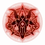
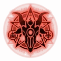
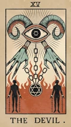

The Abyss Pathway grants demonic and devil-related abilities, including high strength and perception, ritual and sacrificial spells, desire control and corruption, intuitive danger detection, increased size, resistance to mental, poison, and curse attacks, and self-buffing. At high Sequences, its Beyonders become Demons of Body and Mind, corrupt through voice, manipulate blood and bodily fluids, and embody persistent malice.
Pathway progression and late-sequence details contain major story spoilers.Overview
The Abyss Pathway is the path of devils, built around the body, instinct, desire, malice, and corruption. Its lower Sequences develop a dangerous physicality and survival sense before opening into ritualistic magic, individualized Devil spells, curses, poisonous flames, and the ability to sense danger. As the pathway rises, a Beyonder becomes increasingly capable of turning temptation and malice into direct supernatural force: desires can be manipulated, flesh and blood can be controlled, and corruption can spread through words, spells, and contact.
Paraphrased from the Fandom pathway article..
Complete wiki information
Full main-article information imported from the Abyss Pathway wiki article. Existing archive pathway details above are preserved.
The Devil pathway is highly individualistic. […] Unique wills, distinct hearts, and a penchant for desires all amalgamate to form the diverse nature of devils.
Overview
The Abyss Pathway has demonic and devil-related abilities. They have high strength, perception, can cast ritual and sacrificial spells, control and corrupt the desires of others, detect danger intuitively, increase in size, resist mental, poison, and curse attacks, and buff themselves for more strength and defense.
At High-Sequences, they become Demons of The Body and The Mind. They can make their enemies lose control on their desires, and corrupt others with their voice, manipulate blood and body fluids, and such as how the malice never dies, neither demons do.
The Beyonder Characteristics of this pathway originated from the Outer Deity Mother Tree of Desire.[1]
The Above the Sequence of the Abyss Pathway is the Father of Devils, and the corresponding Sefirah is the Tenebrous World.
Sequence Levels
| Abyss Pathway Index |  | |
|---|---|---|
| Sequence | Name | |
| Low SequenceSimplified Chinese: 低序列 | ||
| 9 | Criminal
| |
| 8 | Unwinged Angel[2]
Ancient Name:
| |
| Mid SequenceSimplified Chinese: 中序列 | ||
| 7 | Serial Killer
| |
| 6 | Devil
| |
| 5 | Desire Apostle
| |
| High SequenceSimplified Chinese: 高序列 - SaintSimplified Chinese: 圣者 | ||
| 4 | Demon
| |
| 3 | Blatherer
| |
| High SequenceSimplified Chinese: 高序列 - AngelSimplified Chinese: 天使 | ||
| 2 | Bloody Archduke
| |
| 1 | Filthy Monarch
| |
| True GodSimplified Chinese: 真神 | ||
| 0 | Abyss
| |
Pathway Symbol

The official symbol of the Abyss Pathway.[3]
The color is venetian red.
Corresponding Tarot Card

The corresponding tarot card of the Abyss Pathway is The Devil.[4]
The Devil (XV) is the number fifteenth of 22 Major Arcana. It represents being seduced by the material world and physical pleasures. Also living in fear, domination, and bondage, being caged by an overabundance of luxury, discretion should be used in personal and business matters.[5]
Corresponding Ingredients
Browse the local Abyss Pathway ingredient archive →
Mythical Creature Form
When creatures of different races become Devils, their outward appearance will differ, but they all share several common details such as gigantic bodies, deep black and sinister skin, curved and terrifying ram horns, and pale blue sulfur flames.[6]
Bloody Archduke
When a Devil attains Angelic status, the main characteristic of the Bloody Archduke will be that they seem to be made of congealed blood, capable of liquefying and coalescing.[6]
Filthy Monarch
The Mythical Creature Form of the Filthy Monarch appears as a horrifying image born from the stuff of nightmares, manifested from within a pitch-black abyss of filth and corruption.[6]
Abyss
The Sequence 0: Abyss's Mythical Creature Form is not fixed as one will see what they fear most or what they yearn for the most. This is similar to the adjacent Chained, reflecting the fact that there is an Abyss at the bottom of the human heart. Everyone's Abyss is different, and the Abyss presents a different image in their eyes.[6]
Neighboring and Compatible Pathways
Neighboring Pathways to the Abyss Pathway include:
- Other Pathways under the Father of Devils:
- Pathways under the Mother Tree of Desire:
Compatible Pathways to the Abyss Pathway include, but might not be limited to, the following:
- Pathways under the Inextinguishable Ravings:

- Pathways under the Primordial Hunger:

Non-Adjacent Pathways with Hidden Neighbouring Relationship to the Abyss Pathway include, but might not be limited to, the following:
- Some Pathways under the God Almighty:


Sequence progression
Sequence titles are retained from the archive; key ability notes are concise paraphrases of the linked source material.
| Seq. | Name | Key abilities |
|---|---|---|
| 9 | Criminal | Enhanced physical strength and instincts; broad proficiency with weapons and killing. |
| 8 | Unwinged Angel | Inhuman physical and mental strengthening; individualized Devil spells such as poisonous flames, curses, toxic smoke, and Slowness. |
| 7 | Serial Killer | Devil-worship knowledge, ritualistic magic, Devil-projection summoning, and interference with divination and Spirit Channeling. |
| 6 | Devil | Danger Premonition, Devil Transformation, and spells of flames, poison, filth, and Language of Foulness. |
| 5 | Desire Apostle | Controls emotions and desires, induces depravity, manifests desire as black liquid, and gains individualized abilities. |
| 4 | Demon | Influences minds toward mistakes; adds high-grade spells, strengthened danger sense, foul language, and desire control. |
| 3 | Blatherer | Corruption authority lets speech cause loss of control, damage, confusion, curses, or distant lethal projection. |
| 2 | Bloody Archduke | Commands malice and body; seeds malice for resurrection while controlling blood and bodily fluids. |
| 1 | Filthy Monarch | Wields filth, corruption, corrosion, and flames; summons unclean things and uses corrosive, toxic, corrupting Abyssal flames. |
| 0 | Abyss | Partial authorities over degeneration, filth, corruption, desire, curses, deviants, malice, body, flames, and corrosion. |
Pathway themes & abilities
The pathway’s core domains are malice, desire, corruption or depravity, filth, curses, blood and bodily fluids, corrosion, toxins, flames, ritualistic magic, and Devil transformation. Its progression moves from enhanced strength and weapon use to danger premonition, demonic transformation, desire manipulation, and high-order corruption. At the summit, the Abyss represents a convergence of body and mind: the user can make malice persist, weaponize filth and corrosion, and impose the pathway’s authority over degeneration and depravity.
Sequence-specific highlights are shown in the progression table above.
High-sequence abilities
These are the defining capabilities that separate the upper pathway from its lower-Sequence foundations. Details contain major spoilers.
Demon and Blatherer
High-Sequences can influence the mind through desire, malice, and speech. A Blatherer’s corruption can cause loss of control, confusion, curses, damage, or even a distant lethal projection.
Bloody Archduke
The pathway’s body-and-blood authority becomes explicit. Malice can be planted as a route toward recovery or resurrection, while blood and bodily fluids become tools for attack, control, and transformation.
Filthy Monarch and Abyss
The highest levels combine filth, corrosion, toxins, curses, corruption, and Abyssal flames. At Sequence 0, the pathway reaches its divine authorities over degeneration, desire, malice, body, and the corruption of living beings.
Paraphrased from the Lord of the Mysteries Wiki pathway article.
Novel lore & story appearances
The novel’s Abyss is both a hidden physical realm and a depth within the human mind. Farbauti, later known as the Dark Side of the Universe, fled there after the Ancient Sun God wounded him in the Second Epoch; to escape, he sacrificed much of the demon race and the Wheel of Fortune Uniqueness, transforming the Islands of Beginning into the sealed Abyss. In the Fourth Epoch, humans who worshipped devils formed the Blood Sanctify Sect, divided among the Nois, Andariel, and Beria families. Late in the story, Farbauti’s fate becomes entangled with Lumian and the Tenebrous World
Story connections
- During Klein’s apotheosis crisis, Amon’s placement of the First Blasphemy Slate near the Abyss entrance helped block Outer Deity influence; Farbauti and the Chained God did not intervene, preferring to seek escape
- In Circle of Inevitability, Farbauti and Lumian cooperate around Lumian’s projection into the City of Calamity: Farbauti’s imprint could connect to the Tenebrous World, and Farbauti later entered Lumian’s mind to counter its corruption
- As the Apocalypse begins, Farbauti and the Master of the Shadow Cottage fuse with the Tenebrous World as the Pitch-Black Fiend. They fight the Inextinguishable Ravings and ultimately sacrifice themselves in a curse-based counterattack
Figures to know
- FarbautiSecond-Epoch Devil Monarch and Abyss pathway deity; later corrupted by the Mother Tree of Desire and entangled in the Apocalypse
- Mother Tree of DesireOuter Deity whose former pathway domain includes Abyss; her corruption shapes Farbauti’s condition
- Master of the Shadow CottageFarbauti’s partner in forming the Pitch-Black Fiend
Major story spoilers. Lore is paraphrased;.
Associated figures
Selected figures listed in the source material:
- Farbauti
- Mother Tree of Desire
- Primordial God Almighty
- Agalito
- Jason Beria
- Kircheis
Showing 6 of 12 names listed in the source; this is not an exhaustive roster.